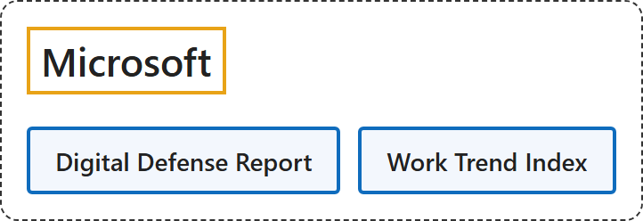

5. Microsoft
Classification

Glossary
| Term | Definition | 中文翻译 | Source |
|---|---|---|---|
| Microsoft 微软 |
"Microsoft's mission is to empower every person and every organization on the planet to achieve more." | 微软的使命是予力全球每一人、每一组织，成就不凡。 | Microsoft, n.d., para. 1 |
| Digital Defense Report 数字防御报告 |
"This report helps organizations decode what is needed to secure AI and build resilience across the interconnected systems they depend on." | 这份报告帮助组织理解在相互关联的系统中保护 AI 并建立韧性需要什么。 | Microsoft, 2026b, intro, para. 1 |
| Work Trend Index 工作趋势指数 |
"The Work Trend Index survey was conducted by an independent research firm, Edelman Data x Intelligence, among 20,000 full-time employed or self-employed knowledge workers who use AI at work across 10 markets between February 18, 2026, and April 7, 2026." | 工作趋势指数调查由独立研究公司 Edelman Data x Intelligence 实施，于 2026 年 2 月 18 日至 4 月 7 日在 10 个市场调查了 20,000 名在工作中使用 AI 的全职或自雇知识工作者。 | Microsoft, 2026a, "Work Trend Index Survey" section, para. 1 |
Timeline
| Date | Report | Scope | Key figures | Source |
|---|---|---|---|---|
| 2026-10-01 | Digital Defense Report 2026 | "165+ trillion" "Security signals processed daily"; data from July 1, 2025 to June 30, 2026 |
|
Microsoft, 2026b, "Key figures from the report", "Cybercrime" and "Resilience" sections |
| 2026-05-05 | Work Trend Index 2026: Agents, human agency, and the opportunity for every organization | "among 20,000 full-time employed or self-employed knowledge workers who use AI at work across 10 markets" "between February 18, 2026, and April 7, 2026." |
|
Microsoft, 2026a, Section III "Redesigning systems and processes", "AI scales differently by industry" and "Work Trend Index Survey" |
| 2025-10-16 | Digital Defense Report 2025 | Trends from July 2024 through June 2025 |
|
Microsoft, 2025b, "Key themes" and "Diversity in initial access" sections |
| 2025-04-23 | Work Trend Index 2025: The year the Frontier Firm is born | "among 31,000 full-time employed or self-employed knowledge workers across 31 markets" "between February 6, 2025 and March 24, 2025" |
|
Microsoft, 2025a, sections 2 and 3, "The race to be an agent boss" and "Survey Methodology" |
| 2024-10-15 | Digital Defense Report 2024 | "78 trillion security signals per day inform our insights" |
|
Microsoft, 2024, "Overview", "Microsoft's unique vantage point", "Ransomware" and "Identity and social engineering" sections |
References
Microsoft. (2024, October 15). Microsoft Digital Defense Report 2024. Microsoft Security Insider. https://www.microsoft.com/en-us/security/security-insider/threat-landscape/microsoft-digital-defense-report-2024
Microsoft. (2025a, April 23). 2025: The year the Frontier Firm is born (Work Trend Index Annual Report). Microsoft WorkLab. https://www.microsoft.com/en-us/worklab/work-trend-index/2025-the-year-the-frontier-firm-is-born
Microsoft. (2025b, October 16). Microsoft Digital Defense Report 2025. Microsoft Security Insider. https://www.microsoft.com/en-us/security/security-insider/threat-landscape/microsoft-digital-defense-report-2025
Microsoft. (2026a, May 5). Agents, human agency, and the opportunity for every organization (Work Trend Index Annual Report). Microsoft WorkLab. https://www.microsoft.com/en-us/worklab/work-trend-index/agents-human-agency-and-the-opportunity-for-every-organization
Microsoft. (2026b, October 1). Microsoft Digital Defense Report 2026. https://www.microsoft.com/en-us/corporate-responsibility/topics/cybersecurity/reports/microsoft-digital-defense-report/
Microsoft. (n.d.). About Microsoft. Retrieved November 3, 2026, from https://www.microsoft.com/en-us/about